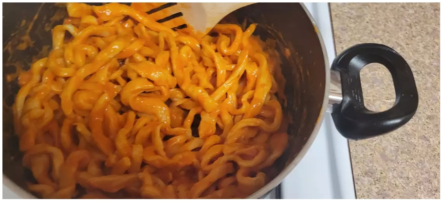

Home
This is Basic Homemade Pasta

Ingredients:
- 1 cups all-purpose flour
- 1/2 teaspoon salt
- 1 eggs, beaten
- 2 tablespoon water (optional)
Instructions:
- Gather all ingredients.
- Combine flour and salt in a medium bowl. Make a well in the center and add beaten egg. Mix well until a stiff dough forms, adding up to 2 tablespoons water if needed.
- Knead dough on a lightly floured surface until smooth, 3 to 4 minutes. Wrap dough and let rest for 30 minutes to 1 hour.
- Roll dough by hand or with a pasta machine to desired thickness, then cut into strips of desired width and length.
Any Recipes: